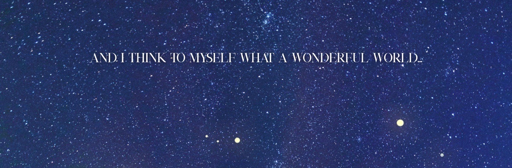

어느 날 화단에 이쁘게 피었던 작은 토끼풀은 봄이 지나 흔적 없이 시들어버렸다. 학창시절 책상 밑으로 몰래 주고받아 입에 문 채 언제 들킬지 몰라 오래도록 녹여 먹여야 했던 알사탕도 어느 순간엔 전부 목뒤로 넘어가고 말았지. 한참을 이어져 끝나지 않을 것 같던 부모님의 일갈도. 당연히 이대로 죽을 줄만 알았던 겁쟁이 시절의 나도. 물론 당시를 기억하는 타인과 나 자신이 있는 한 사라지지 않겠지만 적어도 그것들을 ‘시절’이라 부를 수 있게 되었으니.
또 무엇이 있더라. 어린 시절의 나는 글 한 편당 한 세월을 소비해야 했다. 조금이라도 두꺼운 책을 만나면 몇 날 며칠을 붙잡곤 했지. 처음 펼쳐낸 순간 제 오른손에 집힌 두터운 감각이 즐거웠다. 전혀 막막하지 않았다. 고작 한 장, 아주 얇은 한 장을 넘겨대는 정도로는 고갈될 날이 오지 않을 것 같았으니까. 다만 그럴 리가 있나. 어느새 반대 손에 얹힌 종이의 무게가 서로 엇비슷해지고, 나중엔 역으로 치우치다 못해 책 한 권이 제 왼손에 올라오게 되었을 때, 아, 꽤 좋은 이야기였어. 그러나 이것으로 끝인가. 상실감을 희석하는 것은 결말의 완성도다. 종막을 두려워하는 것이 아닌, 기대할 수 있도록 이끄는 흥미로운 전개…….
영원한 무대란 없다. 그러나 때로 목적을 넘어선 수단이 헛된 기대를 품게 만들 뿐이다.

행동은 감정을 비유하는 수단, 그 이상도 이하도 아닌 선에서 그친다. 입꼬리를 끌어올리는 것, 미간을 구겨버리는 것. 사람을 끌어안고 또 둔기로 내려치는 등의 단순 행위… 단일 행동은 그것만으론 아무것도 의미하지 않는데. 외양을 두고 기쁨과 혐오와 애정과 분노 같은 이름을 붙이는 까닭은, 그것들에 전제될 감정을 우리가 너무나 잘 알고 있기 때문에. 그러니 본말전도다. 감정을 두고 행동 하기에, 행동을 두고 감정을 분석할 수 있는 것이겠지. 동시에 누군가는 들키고 싶지 않은 감정을 숨기기 위해 표정을 감춰낼 테고. 물론 이건 나도 마찬가지려나? 한 때 선글라스로 눈의 움직임을 가리며 한 말이 농담뿐은 아니었으니까. 사람은 눈으로 많은 것을 말하기에, 자신은 그것을 가리다 못해 우스운 꼴로 덮어 모든 말을 유쾌히 넘겨버리겠다 주장했었다.
그렇다 하면 누군가는 나를 향한 혐오감을 참 가감 없이 드러내 주고 있었지.
분노는 포화와 비슷한 감정이라 넘쳐흐른다는 표현이 가장 어울리겠다. 증오를 참아내며 애정을 꾸밈이 일상화 될 때, 분노를 연기하는 일은 겨우 손에 꼽는다. 그렇기에 가장 안도할 수 있다, 진심을 의심할 필요 없이 내게 전해져오는 그대로를 만끽할 수 있는 감정이니까. 동시에 사람의 본연을 가장 잘 나타내는 감정. 넘쳐흐른 감성 속에서 인간은 제 속내를 숨기지 못해 여과 없이 드러내 버리곤 한다. 그렇게 당신이 타인에게 보이지 못할 모습을, 내 눈에는 얼마나 많이 담아왔는가. 당신이 소중히 내친 정의를 애정하되 기대하는 것만으로 나는 벌써 당신을 전부 알아버린 것 같다는 자만에 빠져들어서, 어쩌면 정말 당신을 ‘이해’할 수 있는 건 나뿐일지도 모른다는 기대가 이어져 버리니까…… 정말 이런 속내를 품은 사람은 이 세상에 나밖에 없어? 정답은 누구도 알 수 없을 테다. 당신 시선 속 월광은 실제 나의 단면에 불과하다. 하지만 당신이 그리 확신한다는 것만으로 의미는 충분했다.
“아직 내가 기대하는 막이 많거든. 그러니 당신 바람대로 오래 살도록 해. 나도, 내가 추락하기 이전에 당신 권한 외로 끝장나버리지 않도록 노력해볼 테니까.”
정의로운 주인공, 내가 써내리는 시나리오에서 당신대로 행동해주기만 한다면.
“…하하! 그래. 이상한 짓을 해서 내 권한 외로 추락하는 것을 바라지는 않으니 조심해. …말했잖아? 그쪽의 추락은 내가 직접 지켜볼 거고, 내 손으로 만들 거라고.”
당신이 나의 결말을 추락으로 정의하는 동안 나는 그 끝을 최대한으로 미뤄내 전개를 이루어가면 되는 거겠지.
주인공을 닮았다. 개중에서도 현시대에 애정받는 주인공을 닮았다. 정의로운 영웅의 상념이 머릿속을 진창 헤집어놓더라도 그 실체는 일개 인간일 뿐이다. 전지전능한 힘이라곤 없으니 따라붙은 발자국 하나에 제 행위를 들켜버리며, 박차고 나간 길조차 아무것도 하지 못한 채 꼬여버리는. 잘못된 세상의 정의를 고쳐낼 영향력 따위 평범한 사람에게는 주어지지 않았다. 그러니 그릇되지 않은 정의의 실현을 바란다면 저 스스로를 대가로 바쳐야 했지. 다만 그를 택한 순간부터, 평범할 수 있었나? 애정하는 사람을 위해 목숨 하나 기꺼이 바치는 숭고함이 클리셰 치부될 무렵 당신은 칼날의 끝을 향해 묵묵히 자신을 깎아내었다. 구원은 때로 단죄와 동일시된다. 당신을 바라보면 나는 누군가의 희극과 피카레스크의 비극을 함께 볼 수 있었다. 그리고, 당신을. 캐스트에 이름을 올리지 않은 당신을. 스스로를 무대 위 단두대나 천칭과 같이 쓰고 있는 당신을… 역설적이게는 하나의 인간으로.
“내 삶을… 남기고 싶지 않으니 그렇지. 이미 버리기로 각오한 지 오래야.”
“이러니까 내가 당신에게 붙인 호칭을 정정할 수 없지. 그러면 지금은, 버리는 과정인 건가?”
다만 정녕 그 1년 새에 모든 삶을 버려내었다거나 당신이 정의감 하나뿐인 단편적 캐릭터였다면 더 이상 좋아하지 않았을 거야. 누구보다 인간답지 않으면서도 그 실체는 인간이다. 평범하지는 못하였지만, 그 탓에 결국 나 같은 이들이 열광할 수밖에 없는 주인공. 그럼에도 나밖에 정체를 알지 못할 주인공……. 참 강단 있으면서도 그 고집 탓에 너무나 쉬이 휘둘려버린다. 곤욕만을 목적으로 한 무책임한 시나리오에 착실히도 이끌려준다. 미간을 구기고, 경멸의 시선. 분노에 이기지 못한 언행들. 혐오하는 상대의 의중을 그대로 따라버렸음을 알아차릴 때의 얼굴도, 무지 속의 모습도. 예상에 들어맞고 벗어나는 매 순간이 교체 불능한 카타르시스가 되어버린 건 언제부터였더라. 눈 깜박할 시간마저 아깝다는 듯 뚫어져라 바라보던 중 떠올렸다. 분명 당신 홀로 써 내리고 이행하는 이야기를 가만 바라보는 것도 즐거웠는데. 당신의 다음 행동을 상상하다 답을 맞히듯 하는 습관은 언제부터 들어있었나?
나는 당신에게 종이와 펜을 건네었으며, 금방이라도 어디 구겨지거나 빈 여백으로 돌아올 터라 기대한 페이지에는 잉크 몇 방울이 글자의 형태로 스며들었지.
“… 진짜로 나 주게?”
그리 말한 건 딱히 연기가 아니었다. 신기하다는 듯 종이를 매만지며 해댄 생각 역시.
모든 이에게 역경은 필연적이다만 당신은 막의 가칭부터 정해져 있을 것이다. 자기모순, 자기파멸. 제 삶을 살아가는 인간에게 당연한 이중잣대와 자기합리화는 당신에게 통용되지 않는다. 그렇기에 이끌어낼 필요 없이 가만 지켜보며 기다리면 돼. 악을 처단하는 선역에게 죄를 묻지 않고 그저 통쾌함만을 바라는 난세, 폭력에 이유를 묻는다면 무작정 추켜세우거나—끝까지 듣기도 전에 깔아뭉개 버리는 무자비가 만연한 이곳이 당신의 무대더라도. 악역으로 치부 당하는 순간 여태 받아온 애정만큼의 혐오가 당신을 향할 것이다. 동시에 타인을 멋대로 재단하는 제삼자들이 당신의 죄를 멋대로 용서해오겠지. 그런 극에서 일말의 정당화마저 거절하길 택한 당신은 누구보다 주인공다울 거야. 또한 자신이 단죄해 온 이들과 똑같은 처지가 되어 가라앉고 말겠지. 다신 정의롭지 못하게 됨이 아쉽더라도 이것이 완벽한 이야기, 하나의 극. 내가 집중하는 전개의 끝이기에 무엇보다 애정하게 될 결말이라 기대하고 있었다.
하지만 인물의 예기치 못한 죽음, 아니, 배역을 넘어 배우의 죽음이란. 인생사라는 각각의 극의 주인공에겐 배역과 배우부터 작가까지 모든 역할이 몰아 붙어있다. 그러니 주인공의 죽음은 곧 러닝타임 중도에 극이 무너져 내리는 것과 다름없을 것이다. 누구 말마따나 퍽 싫어할 수밖에.
죽음은 돌이킬 수 없기에 무엇보다 극적인 효과를 가져온다. 이제껏 해온 행위의 연속도, 혹은 아주 새로운 것을 선택할 가능성, 더 나아가 지난날에 대한 후회와 앞날의 기대 전부 죽음 이후 사그라들어버리니까. 그날의 낙원 속 당신, 더하여 나는 결코 추락해선 안 되었다. 정의를 휘두르길 영영 멈추기엔 아직 당신의 삶이 전소하지 않았으며 나는 그런 당신의 기대를 충족시켜 주지 못했으니까. 정녕 ‘은월장’에게 살아가야 하는 이유를 묻는다면 당신과 마찬가지로 의무와 가치관, 그리고 주변인이 되겠지만 잠시 당신의 극에 편입되듯 자리한 ‘월광’에게 되물으면 답은 추락이 되겠지. 내가 애정하는 모든 것이 무대 위, 스포트라이트 아래에 위치한 탓이다. 무대를 내려가서는 안 된다. 당신이 주인공이자 관객이 되며, 내가 관객이자 주인공으로 존재하는 순간을,
‘빨리 돌아와 주었으면, 좋겠는데.’
사랑하고 있으니까.
그리고 몇 문장 적힌 종잇장은 녹빛무리와 함께 효력을 잃었다.
캐리어를 바닥에 내려놓았다. 크게 호흡 한 번 하면 마침내 집에 돌아왔다는 감각이 들었지. 가장 먼저 제 옷가지의 선글라스를 빼내어, 겉옷을 벗으려던 와중. 음? 바스락거리는 소리가 귀에 닿으면 자신이 아주 중요한 약속을 홀라당 깨뜨려야 할 때가 되었음을 알아차렸다. 보는 눈이 없으니 표정을 덜거나 과장할 필요도 없었다. 신나게 입꼬리 올리며 주머니 안쪽에 손을 넣고, 거칠게 접힌 종이 하나 꺼내었고. 그때 정확히 뭐랬더라. ...만일을 위한 것이니 내가 죽기 전에는 보지 마. 내가 이곳에서 죽었을 때만을 위해서야. 살아 나가게 된다면 불태워. 기억이 잘 나질 않네. 그렇담 어쩔 수 없지. 늘 대본집이나 문제집만을 펼쳐댔던 책상 위에 쪽지 하나를 던져두었다. 의자를 끌어 걸터앉았다. 당장 열어젖히든 사근사근 풀어내든 선물 상자의 내용은 바뀌지 않을 텐데, 카운트다운이라도 하듯이. 아주 천천히…….
—서울청 광역수사대 …, …, … … … …에게.
—미안. 이런 짐을 떠안게 해 줘서. 신경 쓰지 말고 살아.
“그게 가능할 거라 보는 건가? 꿈도 커라.”
—장례 치르지 마. 화장도 하지 마.
—불타는 건 사양이야.
“흐흠……”
…잔뜩 설레며 열어본 것과 대조될 정도로 오묘한 기분.
고작 1pg. 몇 줄이 채 되지 않는 문단이다. 하지만 전할 시기가 영영 사라지고 만 편지라 한들 이것이 한때 죽음을 대비하여, 자신이 없는 세상에서야 전할 수 있을 말뭉치를 모아두었다는 사실은 바래지 않는다. 읽은 글자를, 단어를, 문장을 끊임없이 곱씹었다. 남들 모르게 죽길 바란댔나. 괜한 짐을 주기 싫단 이유로. 참 인간적이고 이타적이면서 이기적이네. 정녕 미안하다면 당신을 아끼는 사람들에게 이별을 받아들일 틈 정도는 줘야지. 거기까지 생각이 닿지 못할 정도로 스스로를 하대하고 있는 걸 수도……. 삼켜내듯 이어지는 것은 자연스러운 상상이다. 정말 이 쪽지의 부탁을 지켜주기 위해 펼쳐내야 했다거나. 이야기는 망가지고, 당신의 끝조차 내 눈에 제대로 담을 수 없게 된, 그런 비극.
아니, 담더라도. 어쩌면 내가 무엇보다도 바라는 것처럼, 당신의 결말마저 내가 함께할 수 있게 되더라도……, 여전히 비극일 터라 느껴지는 건 어째서지?
“괜한 짐이라…… 그럼 내게는 알려줄 거죠? 괜하거나 짐이 되지도 않을 테고, 정말 내게있어 공연하다 한들 당신에겐 일말의 복수가 되겠지.”
흐릿하게 지나간 대화를 뒤로하였다.
어린 시절에 비하면 이젠 긴 글도 속독할 수 있게 되었다. 다만 빨리 읽어냄이 과연 좋은 걸까. 조금 더 이야기에 붙잡히길 바라고, 결말이 다가올 때 두근대는 심장이 기대와 불안 중 어느 쪽에 치우쳐 있는지 분간할 수 없게 된 상태인데. 눈이 머리를 앞서지 못하도록 종이의 남은 하단을 제 손등으로 가려냈다. 그리고 천천히 막을 열듯, 내려가며 읽었지. 그리고……,
—그리고 월광.
벙찌듯 가만 내려다보았다.
—그래. 기어코 이딴 걸 쓰게 만든단 말이지.
방금까지 정색하던 참이었는데. 이해한 순간에는 터져 나오는 웃음을 멈출 수 없어 종이를 가린 손을 떼고 입가로 옮겼다.
—지옥에서도 그쪽의 추락을 바랄 테니 지옥에서 보자.
아하하, 정말로……. 내내 오묘했던 기분의 원인을 깨달았다. 어차피, 그곳에서 끝장나고 말고는 상관없을 터였다고.
당신이 사라져 내가 애정하는 이 극이 끝나는 순간은 필연적으로 다가올 것이다. 나의 추락을 이룬 다음이더라도, 그 추락이 죽음에 필적하여 당신의 결말을 알아채지 못하는 상태가 되지 않는 이상. 나는 분명 종막을 알아챈 순간부터 제대로 살아갈 수 없게 되어버리겠지. 여전히 현실은 직시하기 버거울 정도로 잔혹하다. 여전히 겁쟁이인 주제에 점차 현실로 다가서는 나는 일정 부분 연극으로 여기지 않고는 버틸 수 없어. 그리하여 한 번 프로시니엄을 걸쳐 세상을 바라보고자 하면 언제나 생각 중도에 익숙한 그림자가 제 곁을 지나갔다. 당신을 두고 연극 취급하다가, 연극을 둘 때 당신을 먼저 떠올리게 되어버린 건가? 그렇다면 본말전도인데. 어느 순간부터 나의 ‘연극’은 당신에게 기대어 흘러가는 것과 다름없었음을, 이제야 깨달은 것 같다.
그러니 적어도 내게 당신은 필수불가결한 존재가 되어버렸나 봐. 처음부터 끝까지 나의 주도로, 내 멋대로 세운 무대와 시나리오와 배역임에도 그에 가장 먼저 휘말린 건 나였나 보다. 객석에 앉아 주인공을 바라보고자 하는 것도, 나를 관극하여 주인공으로 만들어 주길 바라는 것도 어느 순간 단순 배역과 관객이지 않게 되었다. 정말 흥미로운 막과 장편극으로만 보았다면 이런 다짐 같은 건 하지 않았을 테니까.
—죗값은 치러야만 해.
마지막 문장까지 전부 읽은 다음에는,

©크레페 하름 님
한바탕의 폭소를 마치고 종이 하단에 제 얼굴을 가까이 댔다. 아주 가까이, 하지만 닿지 않도록. 그리고 나지막이 말하는 것으로 지금의 막을 끝맺었다. 영원한 무대란 없다. 그러나 당신이 추락하는 날까지의 시간을 내가 지켜볼 테니,
“언젠가의 종막은 그믐을 가리키겠지. 그때까지 당신을 사랑할게, 차현안 씨.”